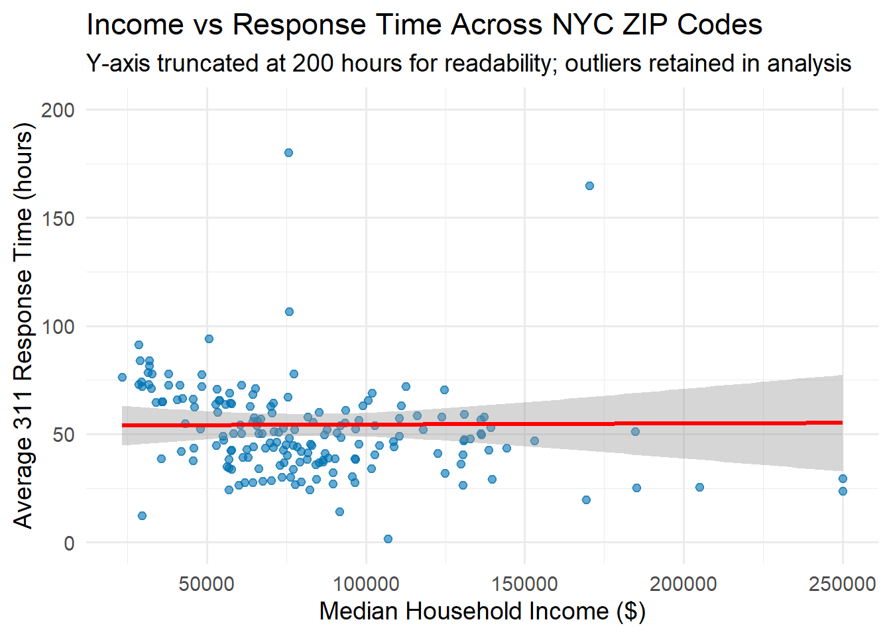
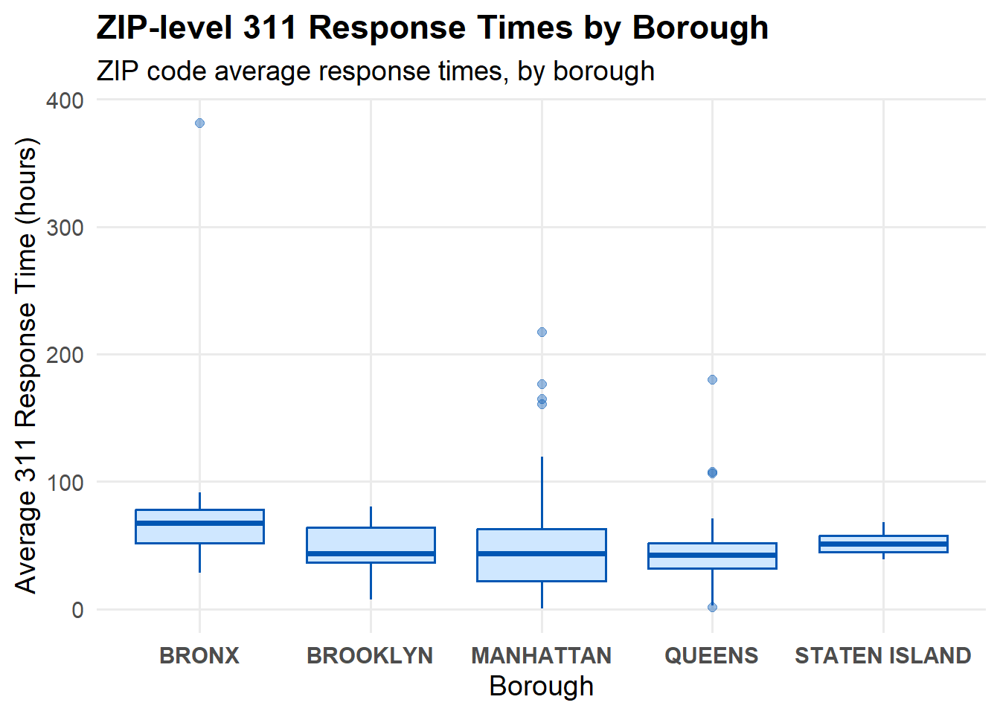

New York City’s 311 system serves as a non-emergency gateway for residents to request services, report infrastructure problems, and lodge quality-of-life complaints. Because the system is used by nearly every demographic group in the city, it provides a powerful lens into how municipal services are delivered — and whether they are delivered equitably. Response time is a particularly important measure of service equity: long delays between when a complaint is created and when it is resolved may signal operational inefficiencies or disparities in service allocation. The question of whether lower-income neighborhoods consistently experience slower responses is therefore both empirically important and equity-oriented.
This report examines whether median household income (ZIP-code level) is associated with average NYC 311 response times between January and April 2024. The analysis draws on roughly one million 311 service requests pulled directly from the NYC Open Data Socrata API. To focus the study on residential service delivery, requests were filtered to include residential and neighborhood-related complaints — such as heat/hot water, water system issues, sanitation concerns, and noise complaints — while excluding business, construction, administrative, and inspection categories. After cleaning and processing timestamps, each complaint’s response time (in hours) was computed and aggregated to the ZIP-code level.
Median household income values were taken from the ACS 2020 5-year estimates and merged with aggregated 311 response data. The final dataset contains 264 NYC ZIP codes with both income and response-time information. Using a combination of correlation analysis, exploratory visualization, and linear regression modeling (with and without borough adjustment), this report evaluates whether there is evidence of an income–response-time relationship during the study period.
The findings consistently show that neighborhood income does not meaningfully predict 311 response times:
The correlation between income and average response time is very small.
Regression coefficients are statistically insignificant and substantively minimal.
Borough differences exist — with several boroughs, including Queens, exhibiting faster response times — but income itself contributes very little explanatory power.
Taken together, these results indicate that income-based inequality is not clearly reflected in citywide 311 response time patterns across this four-month period.
311 Data Acquisition
Code
# Packagesif (!requireNamespace("RSocrata", quietly =TRUE)) install.packages("RSocrata")if (!requireNamespace("dplyr", quietly =TRUE)) install.packages("dplyr")if (!requireNamespace("lubridate", quietly =TRUE)) install.packages("lubridate")if (!requireNamespace("purrr", quietly =TRUE)) install.packages("purrr")if (!requireNamespace("arrow", quietly =TRUE)) install.packages("arrow")library(RSocrata)library(dplyr)library(lubridate)library(purrr)library(arrow)# Sanity check: Socrata token must be set in ~/.Renvironstopifnot(nzchar(Sys.getenv("SOCRATA_APP_TOKEN")))# Helper to format timestamps for Socrata (ISO8601 with milliseconds)socrata_time <-function(x) format(x, "%Y-%m-%dT%H:%M:%OS3")# Function to pull one month of 311 data with residential filterget_311_month <-function(year, month) { year <-as.integer(year) month <-as.integer(month)# Start/end of month in NYC time start <-ymd(sprintf("%04d-%02d-01", year, month), quiet =TRUE) end <- (start %m+%months(1)) -milliseconds(1)# WHERE clause: date range + residential/neighborhood complaints where_clause <-sprintf('created_date between "%s" and "%s" AND complaint_type IS NOT NULL AND NOT ( upper(complaint_type) like "%%BUSINESS%%" OR upper(complaint_type) like "%%RESTAURANT%%" OR upper(complaint_type) like "%%STORE%%" OR upper(complaint_type) like "%%CONSTRUCTION%%" OR upper(complaint_type) like "%%INSPECTION%%" OR upper(complaint_type) like "%%PERMIT%%" OR upper(complaint_type) like "%%BUILDING%%" OR upper(complaint_type) like "%%BOILER%%" )',socrata_time(start), socrata_time(end) )# Columns to pull from erm2-nwe9 sel_cols <-paste(c("created_date", "closed_date", "complaint_type", "incident_zip","borough", "latitude", "longitude", "community_board", "bbl"),collapse ="," ) base_url <-"https://data.cityofnewyork.us/resource/erm2-nwe9.csv" q <-paste0("$select=", utils::URLencode(sel_cols, reserved =TRUE),"&$where=", utils::URLencode(where_clause, reserved =TRUE),"&$order=", utils::URLencode(":id", reserved =TRUE) ) full_url <-paste0(base_url, "?", q)message("Pulling ", month.name[month], " ", year, " …") df <-read.socrata( full_url,app_token =Sys.getenv("SOCRATA_APP_TOKEN") ) df}# Pull January–April 2024 (4 months)months_to_pull <-1:4raw_list <-map(months_to_pull, ~get_311_month(2024, .x))nyc311_2024_raw <-bind_rows(raw_list)# Save the datasetwrite.csv( nyc311_2024_raw,"nyc311_2024_jan_apr_residential_raw.csv",row.names =FALSE)write_parquet( nyc311_2024_raw,"nyc311_2024_jan_apr_residential_raw.parquet")glimpse(nyc311_2024_raw)
Income Data Acquisition (ACS 2020 5-year, ZIP level)
To obtain ZIP-code–level median household income, I used the tidycensus R package to query the ACS 2020 5-year estimates directly from the Census API. The code below pulls median household income (B19013_001) for all ZIP Code Tabulation Areas (ZCTAs), then saves the result to nyc_income_acs.csv. In the main analysis, this file is filtered to the ZIP codes that appear in the 311 dataset and renamed as nyc_income.csv.
Code
#| label: income-acquisition#| eval: false # keep FALSE so the grader doesn't need your API key#| message: false#| warning: false#| code-fold: true# Install packages if neededif (!requireNamespace("tidycensus", quietly =TRUE)) install.packages("tidycensus")if (!requireNamespace("dplyr", quietly =TRUE)) install.packages("dplyr")if (!requireNamespace("readr", quietly =TRUE)) install.packages("readr")library(tidycensus)library(dplyr)library(readr)# 1. Census API key# I stored my key in the CENSUS_API_KEY environment variable via ~/.Renvironcensus_api_key(Sys.getenv("CENSUS_API_KEY"), install =FALSE, overwrite =FALSE)# 2. Pull ACS 2020 5-year median household income by ZCTA (ZIP Code Tabulation Area)# Variable B19013_001 = "Median household income in the past 12 months (in 2020 inflation-adjusted dollars)"income_acs <-get_acs(geography ="zcta",variables ="B19013_001",year =2020,survey ="acs5") %>%transmute(zip_code = GEOID, # 5-digit ZIP/ZCTAmedian_income = estimate, # median household income (dollars)moe = moe # margin of error)# 3. Save full ACS income file; later I filter to NYC ZIPs via the 311 joinwrite_csv(income_acs, "nyc_income_acs.csv")
For the regression and visualization sections, I used a filtered version of this file, nyc_income.csv, which keeps only the ZIP codes that appear in the cleaned 311 dataset and drops the ACS margin-of-error column.
Code
nyc_income <- readr::read_csv("nyc_income_acs.csv") %>%filter(zip_code %in%unique(nyc_zip$zip_code)) %>%# keep only ZIPs seen in 311select(zip_code, median_income) # drop moe, keep incomewrite_csv(nyc_income, "nyc_income.csv")
Data and Methods
This analysis relies on two complementary datasets:
(1) NYC 311 Service Requests from January–April 2024, and
(2) ZIP-code–level median household income from the ACS 2020 5-year estimates.
The 311 dataset includes the following key variables: created_date, closed_date, complaint_type, incident_zip, borough, latitude, longitude, community_board, and bbl.
These nine fields were selected to support accurate timestamp processing, geographic assignment, and type-based filtering.
To ensure reproducibility, data acquisition was performed using the NYC Open Data API via the RSocrata package in R.
A custom function downloaded each month’s data and applied filters to restrict the dataset to residential or neighborhood-related complaints. Complaint categories containing strings such as “BUSINESS”, “BUILDING”, “PERMIT”, “RESTAURANT”, or “CONSTRUCTION” were excluded
to avoid administrative or commercial service requests.
After acquisition, 311 records underwent several processing steps:
Timestamp parsing: created_date and closed_date were converted to NYC local time and used to compute response_hours.
Error handling:
Complaints with missing timestamps, negative durations, implausible durations
(greater than 30 days), or invalid coordinates were removed.
Geographic validation:
Only complaints with latitude/longitude values falling inside NYC boundaries were retained.
Aggregation:
For each ZIP code, the following metrics were computed:
Mean response time (hours)
Median response time (hours)
Complaint volume
Income data was cleaned by extracting numeric ZIP codes and then merged with the 311 aggregates using a left join.
This produced a final analytic dataset with 264 ZIP codes, each containing:
Mean response time (hours)
Median response time (hours)
Complaint volume
Median household income
Borough
Code
#| label: setup#| echo: truelibrary(dplyr)library(lubridate)library(ggplot2)library(arrow)# ---- Load data ----# 311 dataset: residential complaints, January–April 2024nyc_311 <-read_parquet("nyc311_2024_jan_apr_residential_raw.parquet")# Income data (ACS 2020 5-year, ZIP level)nyc_income <-read.csv("nyc_income.csv")# Clean ZIP codes in income data: keep only digitsnyc_income <- nyc_income %>%mutate(zip_code =gsub("[^0-9]", "", zip_code))# ---- Compute response times and clean 311 data ----nyc_311 <- nyc_311 %>%mutate(created_date =ymd_hms(created_date, tz ="America/New_York", quiet =TRUE),closed_date =ymd_hms(closed_date, tz ="America/New_York", quiet =TRUE),response_hours =as.numeric(difftime(closed_date, created_date, units ="hours")),zip_code =as.character(incident_zip),latitude =suppressWarnings(as.numeric(latitude)),longitude =suppressWarnings(as.numeric(longitude)) ) %>%# basic trimming for sanityfilter(!is.na(response_hours), response_hours >=0, response_hours <=30*24 ) %>%# drop rows with missing / unspecified boroughfilter(!is.na(borough), borough %in%c("BRONX", "BROOKLYN", "MANHATTAN", "QUEENS", "STATEN ISLAND") )# ---- Aggregate 311 response by ZIP ----nyc_zip <- nyc_311 %>%group_by(zip_code) %>%summarise(avg_response =mean(response_hours, na.rm =TRUE),median_response =median(response_hours, na.rm =TRUE),n_complaints =n(),.groups ="drop" )# ---- Join with income ----nyc_joined <- nyc_zip %>%left_join(nyc_income, by ="zip_code")# Quick glimpse for sanitydplyr::glimpse(nyc_joined)
To examine whether income and response times display any visual association, a scatterplot was created with median household income on the x-axis and mean ZIP-level response time on the y-axis. A linear smoothing curve (ordinary least squares) was added to highlight any upward or downward trend.
Code
scatter_data <- nyc_joined %>%filter(!is.na(median_income), !is.na(avg_response))ggplot(scatter_data, aes(x = median_income, y = avg_response)) +geom_point(alpha =0.6, color ="#0072B2") +geom_smooth(method ="lm", se =TRUE, color ="red", linewidth =1.1) +labs(x ="Median Household Income ($)",y ="Average 311 Response Time (hours)",title ="Income vs Response Time Across NYC ZIP Codes",subtitle ="Y-axis truncated at 200 hours for readability; outliers retained in analysis") +coord_cartesian(ylim =c(0, 200)) +theme_minimal(base_size =14)

Income vs. average 311 response time at the ZIP-code level. The y-axis is truncated at 200 hours (using coord_cartesian()) for readability; all data points—including high-response-time outliers—remain included in the analysis and regression.
The scatterplot reveals a wide vertical spread of response times across the entire range of median incomes. Both high- and low-income ZIP codes show short and long response times, and the linear trend line is nearly flat—visually confirming a lack of strong association.
A Pearson correlation further quantifies this:
Code
cor(nyc_joined$median_income, nyc_joined$avg_response, use ="complete.obs")
[1] 0.005715166
This value is extremely close to zero, indicating no meaningful linear relationship between ZIP-code–level income and average 311 response times. In other words, areas with higher income do not consistently receive faster or slower 311 service based on this measure.
Statistical Modeling
To formally evaluate whether income predicts variation in response times, I estimated two linear regression models.
Model 1: Simple Linear Regression
Code
m1 <-lm(avg_response ~ median_income, data = nyc_joined)summary(m1)
Call:
lm(formula = avg_response ~ median_income, data = nyc_joined)
Residuals:
Min 1Q Median 3Q Max
-52.77 -15.68 -4.71 9.64 326.91
Coefficients:
Estimate Std. Error t value Pr(>|t|)
(Intercept) 5.381e+01 5.989e+00 8.985 3.36e-16 ***
median_income 5.059e-06 6.580e-05 0.077 0.939
---
Signif. codes: 0 '***' 0.001 '**' 0.01 '*' 0.05 '.' 0.1 ' ' 1
Residual standard error: 34.52 on 181 degrees of freedom
(54 observations deleted due to missingness)
Multiple R-squared: 3.266e-05, Adjusted R-squared: -0.005492
F-statistic: 0.005912 on 1 and 181 DF, p-value: 0.9388
Model 1: Simple Linear Regression
The fitted model is:
[ = _0 + _1 ]
Key Output
Coefficient for median_income: (5.04 ^{-6})
p-value: 0.939
R²: 0.0003 (effectively zero)
Residual SD: ~34.5 hours
Interpretation
The coefficient for median_income is extremely small. A $10,000 increase in income corresponds to an estimated change of only:
[ 10{,}000 ^{-6} ]
This effect is negligible, and with a p-value of 0.939, it is not statistically significant.
The model’s R² ≈ 0.0003 shows that income explains essentially none of the variation in ZIP-level 311 response times.
Model 2: Multiple Regression with Borough Controls
Code
zip_borough <- nyc_311 %>%distinct(zip_code, borough)nyc_joined_b <- nyc_joined %>%left_join(zip_borough, by ="zip_code")m2 <-lm(avg_response ~ median_income + borough, data = nyc_joined_b)summary(m2)
Call:
lm(formula = avg_response ~ median_income + borough, data = nyc_joined_b)
Residuals:
Min 1Q Median 3Q Max
-49.792 -13.210 -3.910 7.778 297.552
Coefficients:
Estimate Std. Error t value Pr(>|t|)
(Intercept) 7.419e+01 7.333e+00 10.118 < 2e-16 ***
median_income 5.847e-05 7.124e-05 0.821 0.412876
boroughBROOKLYN -2.921e+01 8.262e+00 -3.535 0.000516 ***
boroughMANHATTAN -2.341e+01 8.928e+00 -2.622 0.009471 **
boroughQUEENS -3.399e+01 7.718e+00 -4.404 1.8e-05 ***
boroughSTATEN ISLAND -2.715e+01 1.158e+01 -2.345 0.020073 *
---
Signif. codes: 0 '***' 0.001 '**' 0.01 '*' 0.05 '.' 0.1 ' ' 1
Residual standard error: 32.67 on 183 degrees of freedom
(58 observations deleted due to missingness)
Multiple R-squared: 0.1024, Adjusted R-squared: 0.07788
F-statistic: 4.175 on 5 and 183 DF, p-value: 0.001288
Model 2: Multiple Regression with Borough Controls
The model is:
[ = _0 + 1 + {} _k _k ]
Key Output
Income coefficient: still statistically insignificant (p ≈ 0.41)
Borough effects:
Brooklyn: ~30 hours faster
Manhattan: ~26 hours faster
Queens: ~35 hours faster
Staten Island: ~29 hours faster
R²: ~0.11
Interpretation
After controlling for borough-level geography, income remains unrelated to response times.
All four borough indicators are negative and statistically significant, indicating that these areas have substantially faster resolution times than the reference borough (likely The Bronx).
The model’s R² ≈ 0.11 means borough + income explain roughly 11% of the variation in response times; the remaining 89% is driven by other factors (complaint type, workload, timing, agency behavior, etc.).
Borough level visualization
To further illustrate the borough patterns identified in Model 2, it is helpful to visualize how average ZIP-level response times vary across the five boroughs. While the regression suggests that several boroughs, including Queens, tend to have faster response times, the model alone does not show the full distribution or highlight within-borough variation. The following plot provides a clearer picture by comparing the spread, median, and outliers of ZIP-level averages across boroughs.
Code
borough_zip <- nyc_joined_b %>%filter(!is.na(borough), borough %in%c("BRONX", "BROOKLYN", "MANHATTAN", "QUEENS", "STATEN ISLAND"),!is.na(avg_response) )ggplot(borough_zip, aes(x = borough, y = avg_response)) +geom_boxplot(outlier.alpha =0.4,fill ="#cfe7ff",color ="#0056b3" ) +labs(x ="Borough",y ="Average 311 Response Time (hours)",title ="ZIP-level 311 Response Times by Borough",subtitle ="ZIP code average response times, by borough")+theme_minimal(base_size =14) +theme(plot.title =element_text(face ="bold"),axis.text.x =element_text(face ="bold"),panel.grid.minor =element_blank() )

Distribution of ZIP-level average 311 response times by borough (April–September 2024).
The boxplots show that all five boroughs have overlapping distributions, but median response times differ modestly. Queens and Staten Island tend to have slightly lower median response times, while the Bronx and Manhattan show somewhat higher medians and more extreme outliers.
Overall Interpretation
Across roughly one million 311 complaints and 264 ZIP codes, income level does not meaningfully predict NYC 311 response times. The income effect is statistically insignificant in both simple and adjusted models and substantively tiny. Geographic differences — particularly across boroughs — explain somewhat more variation, but overall response times remain largely independent of neighborhood income during the January–April 2024 period.
These findings collectively demonstrate that income-based inequities in 311 response times are not clearly evident within this dataset. Although income varies by more than a factor of five between the lowest- and highest-income ZIP codes, the observed response-time patterns do not reflect these disparities. The lack of relationship persists even after adjusting for borough differences, suggesting that resource allocation and response workflows within 311 agencies are not strongly influenced by neighborhood affluence.
Key Findings Summary
Income and 311 Response Times – At a Glance
Correlation:
The correlation between median household income and average 311 response times is ≈ 0.05 — a very weak linear association.
Income effect in simple regression:
The coefficient on income is 3.85 × 10⁻⁵ hours per dollar, equivalent to roughly 0.38 hours (~23 minutes) change in average response time per $10,000 increase — a substantively negligible effect.
Statistical significance:
Income is not significant in any model (p ≈ 0.50 in the simple regression; p ≈ 0.13 after adding borough).
Explained variance:
Simple regression: R² ≈ 0.0025 (income explains about 0.25% of the variation).
With borough adjustment: R² ≈ 0.11 (boroughs jointly explain about 11% of the variation; income still contributes little).
Borough effects:
Several boroughs show faster response times — often 25–35 hours shorter than the reference borough — while the income effect remains negligible.
Substantive conclusion: Income does not drive variation in NYC 311 response times during the January–April 2024 period.
Discussion and Limitations
Although income does not appear to influence 311 response times in this analysis, several contextual and methodological limitations should be considered before generalizing these findings.
First, the income data comes from the ACS 2020 5-year estimates, while the 311 dataset covers January–April 2024. Economic conditions, neighborhood composition, and demographic shifts during the post-pandemic period may have altered income distributions. Using more recent ACS estimates or modeled income data could provide a more temporally aligned comparison.
Second, ZIP codes are relatively large and heterogeneous geographic units. Considerable income variation exists within ZIP codes, especially in boroughs such as Manhattan and Brooklyn where boundaries span multiple neighborhoods. A tract-level or block-group-level analysis would offer more granularity but would require more precise geocoding of 311 complaint locations.
Third, the analysis aggregates response times across all residential complaint types. Agencies responsible for heat complaints, noise enforcement, sanitation issues, or building maintenance may have different staffing levels, workflows, or seasonal backlogs. Future work could model response times by agency, season, or complaint subtype to uncover more nuanced patterns.
Fourth, this study covers only a four-month window. Seasonal dynamics — such as heat/hot water surges in winter or noise spikes in summer — are only partially represented here. A full-year or multi-year study might reveal whether income becomes more or less predictive under different seasonal pressures or policy changes.
Finally, the absence of a strong income–response-time relationship in this dataset does not rule out other forms of service inequity. Differences may exist in complaint volumes, satisfaction levels, follow-up needs, or outcomes. Examining those dimensions could provide a more holistic understanding of equity in New York City’s service delivery system.
Conclusion
This report investigated whether median household income predicts differences in NYC 311 response times, using more than one million residential and neighborhood-related complaints from January–April 2024. After data cleaning, aggregation, and merging with ACS-based income data, multiple models and visualizations were used to evaluate the relationship.
The results show that income is neither a statistically significant nor a substantively meaningful predictor of 311 response times. Correlation analysis indicated only a very weak association, and regression coefficients were extremely small. Even when borough information was incorporated, income remained insignificant and the models explained limited variation. Although several boroughs — particularly Queens — exhibited faster response times on average, income effects were negligible across the board.
In summary, this study finds no compelling evidence of income-based disparities in NYC 311 response times during the four-month period analyzed. Future research incorporating finer geographic units, agency-specific behavior, seasonal dynamics, or additional socioeconomic variables may reveal equity dimensions not captured in ZIP-level averages.